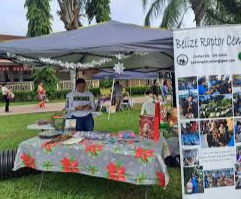
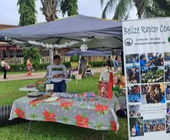
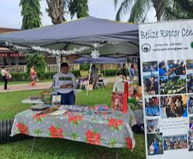

🎭 Cayo Events & Culture Hub
This section highlights festivals, town fairs, farmers markets, sporting events, and community meetings across Cayo.
The site also promotes local artists, musicians, dancers, and historians.
 

Connecting Food, Culture, and Nature in Cayo
The Cayo Local Food Hub connects local farmers, backyard gardeners, fishermen, and food vendors with residents, restaurants, and small grocery stores. The goal is to reduce food imports, support local producers, and keep money within the Cayo District.
This platform can show what produce, meat, and handmade food items are available each week, including prices and contact information.
This section highlights festivals, town fairs, farmers markets, sporting events, and community meetings across Cayo.
The site also promotes local artists, musicians, dancers, and historians.

Cayo is known for its jungles, rivers, caves, wildlife, and outdoor adventures.
Visitors can learn about environmental laws and responsible tourism.